Montana - Il était une fois dans l'Ouest
Bonjour à tous,
Cela fait maintenant près de deux semaines que nous sommes installés dans notre ranch d'élevage de bison dans le Montana à vivre comme de véritables cow-boys des temps modernes ! En deux semaines on a déjà appris énormément de choses à la fois sur la vie à la ferme, mais aussi sur la culture américaine typique du Midwest. Mais commençons par le commencement : comment sommes nous-arrivés là ??
Le woofing : du travail contre un toit et de la nourriture
Dans le cadre de notre projet d'étude de l'eau douce à travers les continents américains, nous devions nous intéresser à un pan primordial de l'utilisation de la ressource. Selon la FAO, l'agriculture concentre 70% de la consommation d'eau douce mondiale, et 30% de la production céréalière mondiale est destinée à l'élevage. Vous comprendrez donc aisément notre décision de passer un mois dans une ferme pour être véritablement au cœur du sujet.
Nous sommes passés par le réseau Wwoofing (pour World Wide Opportunities on Organic Farms) afin de trouver un établissement prêt à nous accueillir. Le concept est simple : nous travaillons pour la ferme en échange de quoi nous sommes nourris, logés et blanchis. Si vous voulez en savoir plus nous vous conseillons vivement de suivre les aventures de nos amis les Travelling Farmers qui parcourent le monde depuis plusieurs mois travaillant de ferme en ferme, de pays en pays. Bref, lorsque nous avons vu qu'un ranch d'élevage de bison proposait d'accueillir des woofers, nous avons sauté sur l'occasion, et intéressés par notre projet les propriétaires ont accepté de nous accueillir pour un mois !
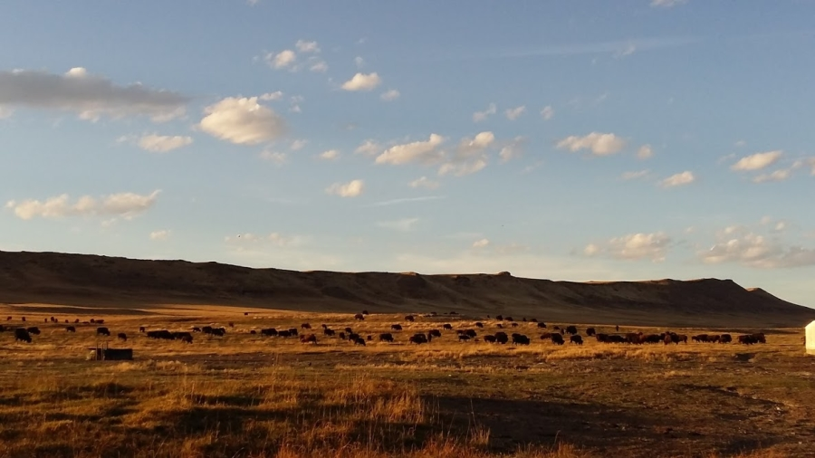
Le troupeau d'environ 150 bisons du ranch
Retour en société
Le premier choc pour nous n'a pas été de cotoyer des bisons mais de revenir à un semblant de vie sociale après un mois d'errance dans le Grand Nord :) Les propriétaires de la ferme s'appellent Chris & Taunia, et leurs trois enfants Basil (19 ans), Hayden (15 ans) et Theanna (12 ans 1/2) vivent sur place. Tous les soirs nous retrouvons la famille pour diner et nous prolongeons en général la soirée en regardant un film avec eux, ou bien avec une partie de baby foot, de billard ou même de jeux vidéo !
Le reste du temps nous le passons au coin des woofers, à une centaine de mètres de la maison principale, où nous vivons avec Dennis, l'employé qui s"occupe de la gestion du ranch, Jon, un ami des garçons Basil et Hayden et Julia, une autre woofeuse, française qui est là pour un an ! Retour à la vie sociale donc, mais aussi au confort : un vrai lit chacun, électricité, eau courante, douche, Internet, etc.
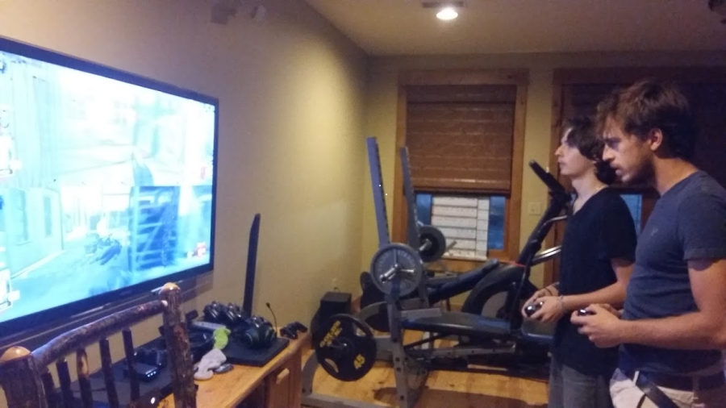
Antoine décompresse en jouant aux jeux-vidéo avec Hayden
Farmers for real
Comment s'occupe-t-on d'un troupeau de bison vous demandez-vous ? Et bien globalement on ne les approche pas et on les laisse manger tranquillement l'herbe de la propriété. La grande partie du travail que nous effectuons consiste en fait à entretenir les clôtures, et notamment à les réhausser. En effet sous son air placide et pataud, le bison peut sauter des obstacles de plus d'1m50 à la manière d'un cerf. Il peut également vous embrocher d'un coup de corne, c'est pourquoi on nous déconseille de les approcher de trop près.
En plus des clôtures on devient aussi de véritables as du volant des différents engins de la ferme. Les créneaux en tracteur John Deere n'ont plus de secret pour nous, et nous manions les pick-ups vintage à merveille, même lorsqu'il s'agit de relancer la batterie avec les pinces comme ça nous est arrivé.
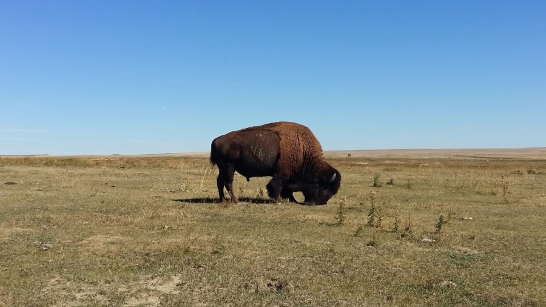
Ne vous fiez pas à l'air placide de la bête
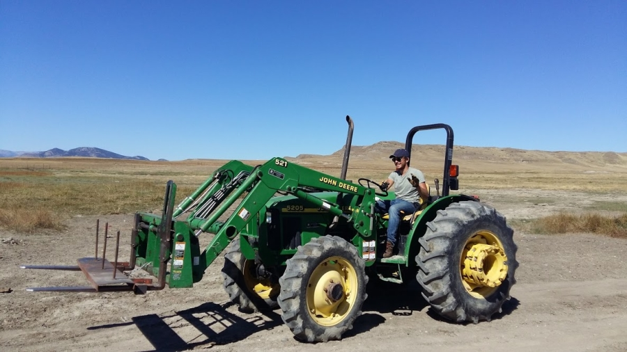
Antoine, en totale maîtrise au volant de son John Deere
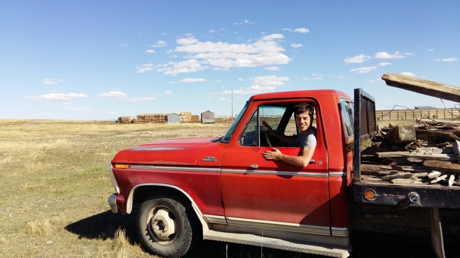
Grégoire n'est pas en reste aux commandes de ce pick-up Ford Ranger édition 1970
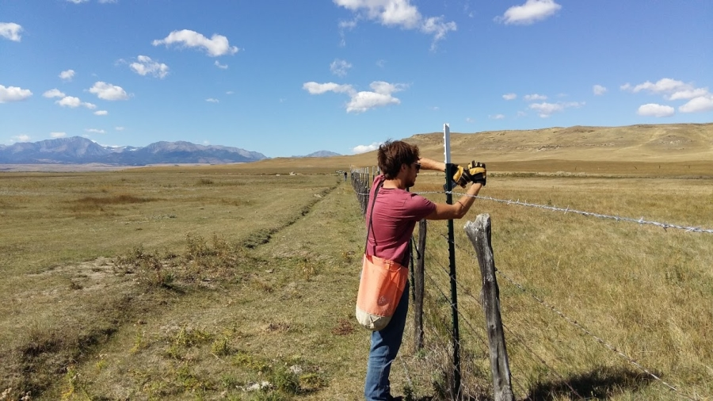
50% de notre travail consiste à nous occuper des clôtures
50 millions d'amis
Enfin on apprend à s'occuper de la faune locale : aller nourrir les poulets tous les matins mais surtout s'occuper de la quinzaine de chevaux du ranch ! Julia est en charge du dressage des chevaux et c'est elle qui nous apprend à monter. Si Antoine avait déjà eu l'occasion de monter à cheval à quelques reprises, c'était pour moi une grande première !! Pas totalement rassuré au début, j'ai tout de même réussi à lancer mon cheval sur quelques pas de trot à la fin de la séance ! Depuis cette première tentative je n'ai pas retenté l'expérience, préférant aller courir dans les vastes plaines du Montana lorsqu'Antoine et Julia partent en balade à cheval, mais je promets de réessayer :)
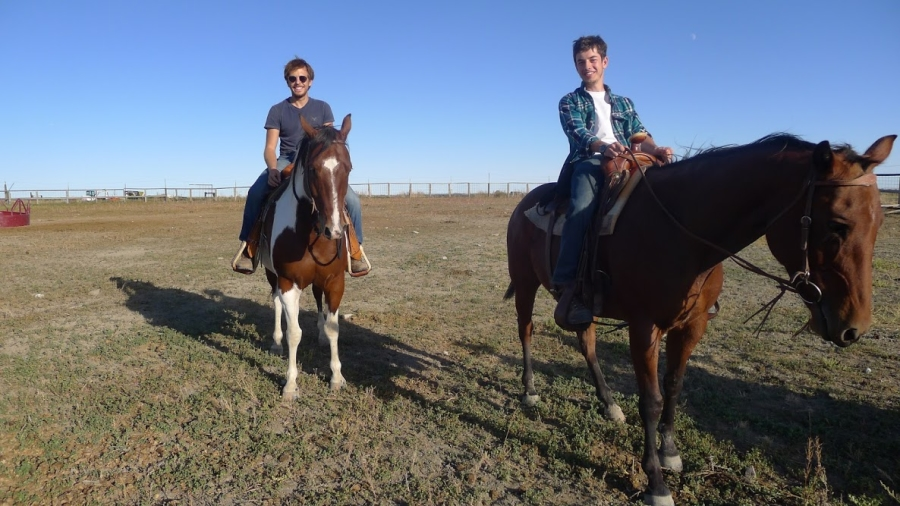
Fiers comme des coqs sur nos chevaux
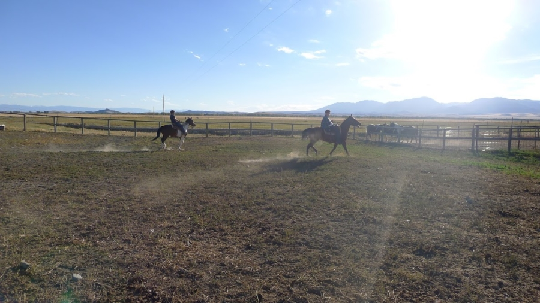
Il ne nous reste plus qu'à maîtriser le lasso pour devenir de vrais cow-boys
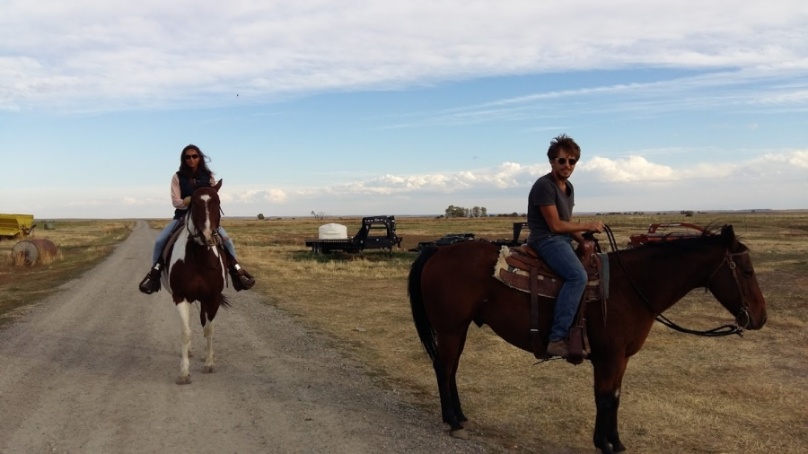
Antoine et Julia partent en balade
Plus récemment ce sont les chats qui ont mobilisé notre attention avec la découverte d'une portée de chatons sous une plaque de tôle que nous déplacions. Theanna a décidé d'en adopter un, et moi un deuxième :) Je n'ai pas su résisté à la petite tête d'ange de cette boule de poil. Je l'ai baptisé Spinoza, peut être que sur la suite du parcours on pourra discuter un peu philosophie avec lui !
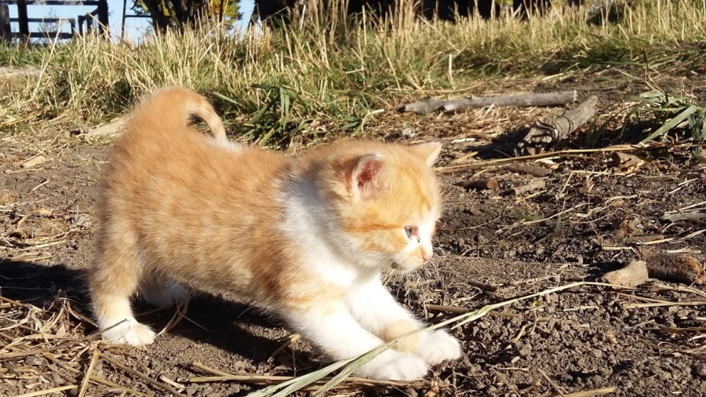
Bienvenue à Spinoza, nouveau membre de l'équipe Aquamerica
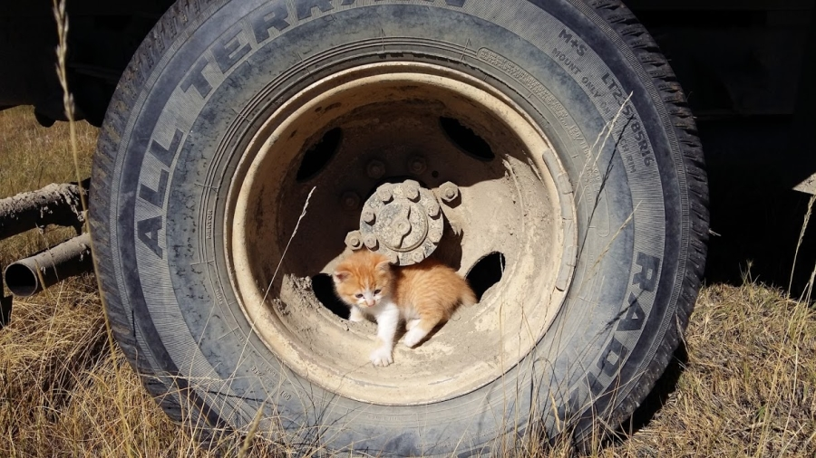
Spinoza aussi aimerait savoir conduire
Bref on est très content du ranch que nous avons trouvé. On trouve un bon équilibre de vie entre le travail à la ferme, les temps libres pour nous reposer et les activités avec les autres membres de la famille. En plus le temps est au beau fixe depuis notre arrivée et on peut enfin profiter de la chaleur et du soleil !!
Allez comme d'habitude on vous propose un petit jeu pour conclure cet article. Chris le propriétaire du ranch correspond bien à l'image de l'Américain du Midwest qu'on a. Ne lui parlez pas d'Obama (un communiste selon ses propres dires), de réforme sociale (il faut travailler pour réussir) ou de gouvernement (il n'est là que pour piquer votre argent). En revanche c'est un véritable fan d'armes à feu, il en a plus de 40 chez lui... mais à votre avis combien a-t-il de munitions en stock ?
Celui ou celle qui s'approchera le plus de la bonne réponse aura droit comme d'habitude à une dédicace sur notre page Facebook ;) Envoyez vos propositions à contact@aquamerica.fr
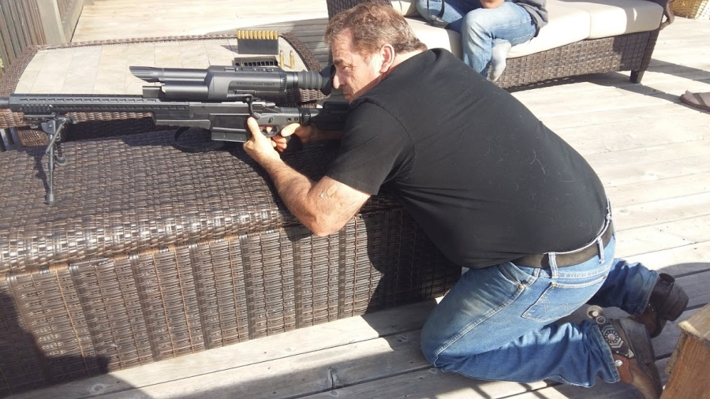
Chris, fusil sniper à la main et bottes à éperons aux pieds, a 40 armes à feu chez lui... mais combien a-t-il de munitions ??
A très vite,
Grégoire